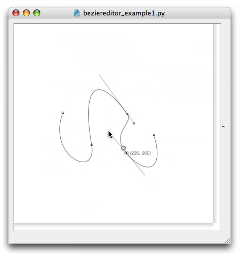
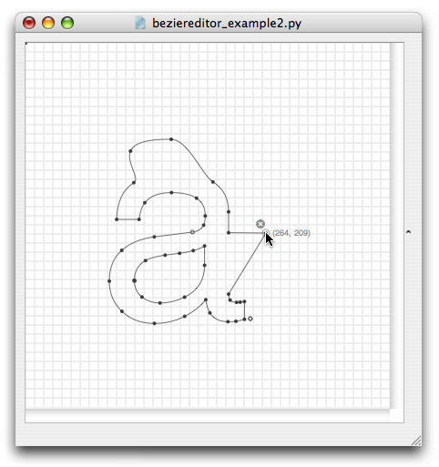
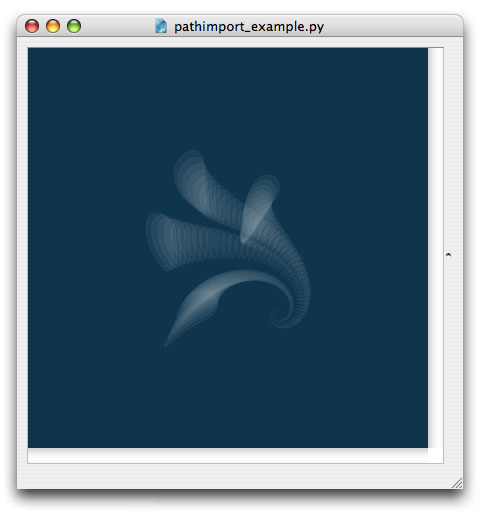

Bezier Editor
NodeBoxThe Bezier path editor offers an interactive way to construct paths in NodeBox. Some things are better done with the mouse than with code and creating smooth paths just the way you want is one of them. This straightforward editor allows you to create paths by adding and moving path points, dragging handles, drawing in freehand and organising points on a grid.The path you create is automatically stored in an SVG file. You can then import the file with the SVG library in other NodeBox projects to do all sorts of fun and programmatic things with your path. You can also import the SVG file in Illustrator or Inkscape to fine-tune it.
Download
| beziereditor.zip (18KB) |

Documentation
How to get the library up and running
Using the Bezier editor is simple enough. Just open one of the included examples and you're basically ready to go. You can fine-tune and copy the examples according to your own needs.
To get an idea of how the library works, take a look at the movies below.

Play movie | the first example script lets you build paths from scratch.

Play movie | the second example script shows you how to import an existing path.

The third example script shows you how to import the resulting SVG file in another NodeBox project.
Controls in the editor
Adding points: pressing the mouse anywhere on the canvas adds a new point to the path. You can instantly drag its control handle to create a curve. Clicking on the path inserts a point.
Editing points: select a point by clicking on it. You can drag its control handles, move the point and delete it by clicking the button with a cross.
Point handles: when dragging a point's control handle, hold down "x" to break contuity: this half of the handle will move independently from the other half.
Deselect a point: hit ESC to deselect the current selected point.
Delete a point: hit BACKSPACE to delete the current selected point.
Breaking a path: the last point in the path has an extra pause button. By clicking this you break the path, the next point will start at a new location.
Moving the path: use the LEFT, RIGHT, UP and DOWN keys to move the path around on the canvas.
Magnetic grid: hit TAB to activate or deactivate the magnetic grid. Points will snap to it when moved.
Freehand drawing: press "f" to enter freehand mode. You can now draw freehand lines. Press "f" again to exit freehand mode. When you delete the last point in a freehand path, the whole freehand path will be removed.
Keep in mind that the bezier editor is a lightweight and experimental tool - it will react a bit sluggish when you work with a lot of points. Use it to quickly sketch things in NodeBox without having to switch to a third-party vector application. For really complex paths, use code or a professional vector editor like Illustrator or Inkscape.